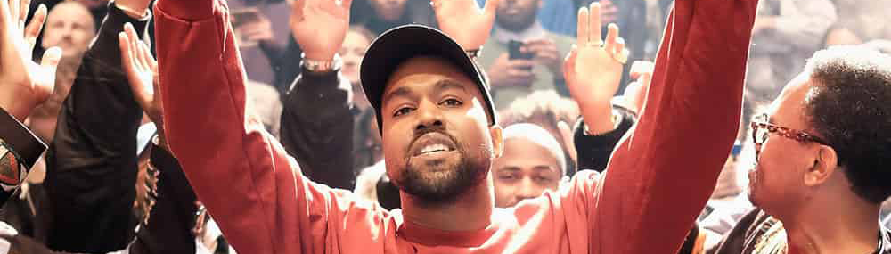
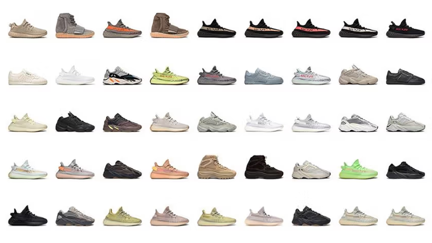
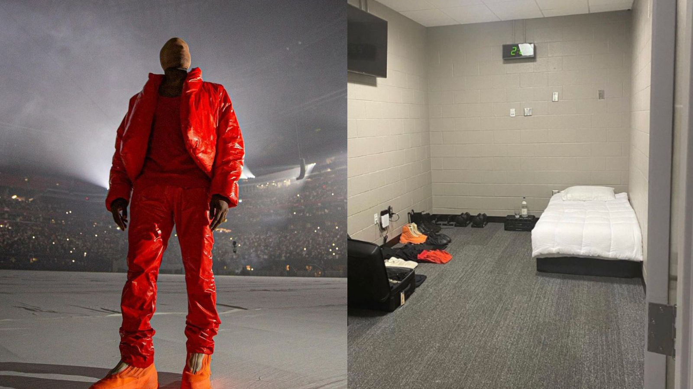

Ye (formerly known as Kanye West) began his rise to stardom in the early 2000s as a lowly producer for the record label Roc-A-Fella Records, where he made hit beats for artists like Jay-Z and Nas. After much convincing, he was given the opportunity to release his own solo album, from which we got The College Dropout.
The Dropout Trilogy
Released in February 2004, The College Dropout on release week shattered everyone's expectations and fundamentally reshaped what hip-hop could be. The album debuted at number two on the Billboard 200, with it's introspective and witty lyricism standing in sharp contrast to the era's toughguy sound. Tracks like "Through the Wire" became stand-out successes in their right, despite Ye literally recording them with his mouth wired shut from a car accident. The album would earn him a Grammy for Best Rap Album and ten nominations in total, including Album of the Year.
He would follow his standout success with Late Registration (2005) which would also claw its way to the top of the charts, debuting at number one with the massive hit "Gold Digger". Then came Graduation (2007), solely evolving both the pop and rap genres in one go. These three albums form 'the Dropout Trilogy' — a historic run which, alone, secured Ye's place in music history before even turning 30.
Fashion
After years of muiscal success, by the mid-2010s, Ye's vision for the world had extended greatly past music. In 2015 he would collaborate with Adidas to create the YEEZY fashion line - this would result in the single most commercially successful sneaker in celebrity history.


In a time where expensive designer fashion prided itself on being abrash and bold, Ye would focus YEEZY on fundamental innovation of the pieces at an affordable price-point. He would team up with GAP to produce these affordable pieces, and cement himself too as a fashion icon for the people.
Donda Stadium
The Donda album rollout in 2021 turned into a viral month-long cultural event for rap. Ye 'took over' the Mercedes-Benz Stadium in Atlanta drawing tens of thousands of fans for three nights to experience the album as it was worked on in the stadium. The shows featured a full-scale replica of Ye's childhood home in the centre of the arena and cameos from DaBaby, Marilyn Manson, and Kim Kardashian (his wife).

It's said that Ye 'took-over' the stadium, giving it the nickname Donda Stadium, as he rented the whole place out for 24 days to work solely on the album; not leaving the stadium until the end of the event and the album's release.
Mercedes-Benz Stadium on Google Maps.
BULLY
After a long and drawn-out period of mental instability in his life, Ye would return in 2026 with his 10th studio album, the infamously-delayed-six-times BULLY, releasing via a new record label, 'Gamma'. The album, again, debuted at number two on the Billboard 200 and was preceded by a full-frontpage apology letter in the Wall Street Journal - apologising for his period of instability. The album rollout would culminate in two fully sold-out nights at the SoFi Stadium, his U.S. concert since the Donda Stadium experiences.
Famous for pushing the boundaries of every space he enters, Ye would perform the BULLY concerts atop a massive replica of planet Earth. Many favourites from his discography were perfomed, with many cameos including but not limited to his own daughter North West! Even though BULLY's tracks were only less than a week old, Ye would recieve a thunderous sing-along from his ever-enthusiastic crowd - and his future tours would soon sell-out too.
A live stream of the first day of the SoFI Stadium BULLY concert.